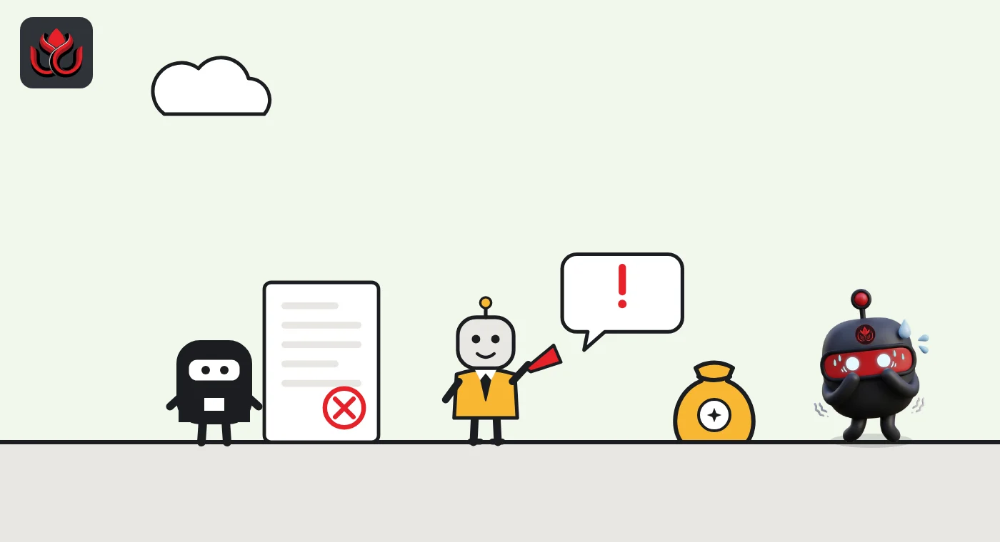
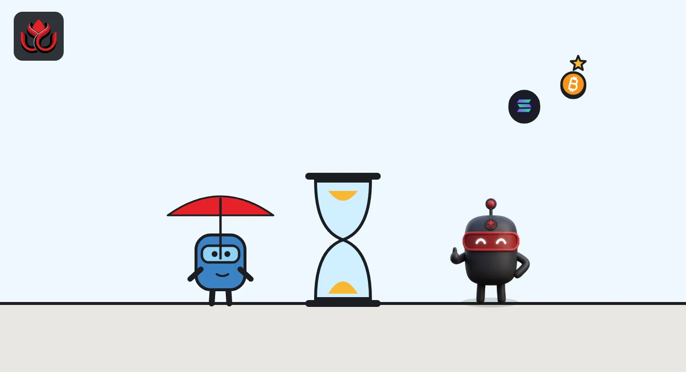

Vietnam's crypto fines are live: up to VND 200 million for firms, a reprieve for traders
Decree 284/2026/ND-CP took effect on September 1, with fines for unlicensed exchanges, crypto advertising, weak identity checks and data leaks. For ordinary investors who trade on offshore exchanges, the Ministry of Finance says fines only start six months after the first local provider is licensed, and none had been by early October.
Key points
- Vietnam's Decree 284/2026/ND-CP has applied since September 1, 2026, and sets fines of up to VND 200 million for organizations and VND 100 million for individuals.
- Running or advertising crypto trading services without a license costs VND 180 to 200 million, and businesses face these fines now.
- Investors trading outside licensed providers get a six-month grace period that starts only when the first provider is licensed; none had been as of October 6.
What the decree does
Vietnam's first set of fines for crypto has applied since September 1, 2026, with penalties of up to VND 200 million for firms. Decree No. 284/2026/ND-CP was issued by the government on July 16, 2026, according to the Official Gazette. It stays in effect for as long as the crypto pilot it supports.
That pilot was set up by Government Resolution No. 05/2025/NQ-CP of September 9, 2025, which launched a trial of a licensed crypto asset market in Vietnam. Under it, the Ministry of Finance licenses local providers of crypto services. Decree 284 sets what happens to people and firms that break the pilot's rules, from token issuers and exchanges to individual investors.
The ceiling is VND 200 million (about US$7,700, LC Insight conversion) for an organization and VND 100 million for an individual, the government's news portal said when the decree was published. The fine amounts in the decree are set for organizations. An individual who commits the same breach pays half.
Who gets fined, and for what
The decree covers offering and issuing tokens, running a trading market, the duties of service providers, trading itself, transfers by foreign investors, obstructing inspections, misuse of account data, and anti-money-laundering breaches. Based on the government's summaries in Vietnamese and English, the main bands are:
- Unlicensed markets: VND 180 to 200 million for providing crypto trading services, or advertising and marketing crypto, without a license to run a crypto trading market.
- Issuers: VND 70 to 100 million for breaking foreign ownership rules on the assets behind a token. VND 100 to 150 million for inaccurate, incomplete or late information. VND 150 to 200 million for offering tokens to ineligible buyers, offering without meeting the pilot's conditions, not publishing the offering prospectus, or not following its terms.
- Service providers: VND 50 to 70 million for failing to verify the identity of investors opening accounts.
- Investors: VND 30 to 50 million for domestic investors who trade crypto without going through a provider licensed by the Ministry of Finance. VND 70 to 100 million for domestic investors who trade tokens offered only to foreign investors.
- Data: VND 150 to 200 million for unlawfully collecting, storing, trading, giving away or disclosing crypto account data.
Because the amounts are set for organizations, the investor bands would fall to VND 15 to 25 million and VND 35 to 50 million for an individual under the half rule, by our reading.

Fines at a glance
The highest fines target the businesses that hold customer money and data, and anyone selling crypto services without a license. The lowest band applies to investors, and even that one is on hold for now.
Top of each fine band under Decree 284 (selected breaches, organization rates)
VND million
Source: Government of Vietnam news portal, summary of Decree 284/2026/ND-CP. Individuals pay half the organization rate.
Why traders get a reprieve
The rule that worries ordinary users most is the fine for trading outside a licensed provider. For now, it cannot bite.
On October 6, the Ministry of Finance answered a reader's question on the government portal about whether trading on international exchanges after September 1 breaks the law. The ministry pointed to Resolution 05/2025, which gives domestic investors a six-month transition that starts on the day the first crypto service provider is licensed. Only after that window ends can investors who keep trading outside licensed providers face administrative fines or, in serious cases, criminal liability.
The ministry also said that no crypto service provider in Vietnam had been licensed by the competent authority. So the six-month clock had not started as of early October.
For businesses, there is no such delay. The fines for running or advertising crypto trading services without a license have applied since September 1.

Who carries the weight
Decree 284 completes the basic legal framework for the pilot. Resolution 05/2025 set out who may issue tokens, who may run a market and who may trade. The decree now attaches a price to breaking those rules, and it names who can write up violations and issue fines.
The design puts most of the weight on firms. The top bands, up to VND 200 million, apply to unlicensed services and advertising, issuers who mislead investors, and anyone who leaks or sells account data. Investor fines are lower and, for now, deferred.
The decree also covers breaches of the rules on money laundering, terrorist financing and weapons proliferation financing by firms and people in the crypto market, alongside the trading rules.
Timeline
Resolution 05/2025/NQ-CP launches a crypto market pilot
Government issues Decree 284/2026/ND-CP on crypto penalties
Government portal publishes the decree's fine bands
Decree 284 takes effect
Ministry of Finance says no provider licensed yet; investor rule waits for six-month transition
LC Insight analysis
This section is our reading of the facts above, not a statement of fact.
- We think the business fines matter more than the investor fines for now. Offshore platforms that advertise to Vietnamese users face a clear legal risk, and the likely result is less local marketing by unlicensed exchanges.
- For traders, the real start date is not September 1 but the day the first license is issued, plus six months. That puts the pressure on the Ministry of Finance and the applicants, not on users.
- VND 200 million is small next to the size of the market. We read the decree as a push toward licensing, not a revenue tool.
What's next
- The Ministry of Finance issuing the first crypto service provider license, which starts the six-month clock for investors
- Whether offshore exchanges restrict Vietnamese users or stop local promotion
- First published fines under Decree 284
Disclaimer. This article is based on public information and the sources listed below as of the update time shown. It is for information only and is not investment, legal or tax advice. Figures may change as companies and authorities publish new data.
Sources
- Official Gazette of Vietnam, Decree No. 284/2026/ND-CP (issued July 16, 2026)
- Government of Vietnam news portal, Decree 284 fines summary (July 17, 2026, Vietnamese)
- Government of Vietnam news portal, Administrative sanctions against violations in crypto assets (July 20, 2026, English)
- Government of Vietnam news portal, Ministry of Finance answer on trading outside licensed providers (October 6, 2026)